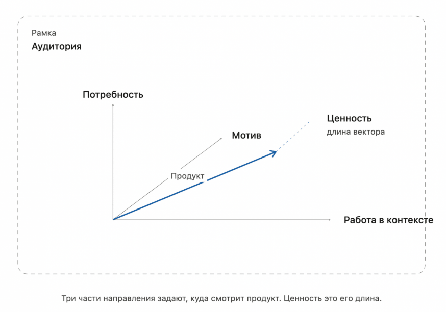

Формальное описание модели и анализ перспектив внедрения продукта на рынок медицинской радиологии
Предлагается рассматривать воспринимаемую ценность продукта для конкретного потребителя (врача, клиники) как векторную величину в трёхмерном декартовом пространстве. Каждая ось соответствует одному из трёх базовых факторов принятия ценности:

| Ось | Фактор | Смысловое содержание | Примеры для SayWord |
|---|---|---|---|
| $\vec{e}_x$ | Текущий контекст $C$ | Насколько внешняя среда благоприятна для внедрения: инфраструктура, регуляторика, позиция руководства, бюджетный цикл | Клиника уже использует МИС; главный врач поддерживает автоматизацию; есть статья бюджета на IT |
| $\vec{e}_y$ | Потребность $N$ | Острота проблемы, которую решает продукт: насколько велики потери без него | Радиолог тратит 3+ часа на документацию; отделение перегружено; высокий риск ошибок из-за усталости |
| $\vec{e}_z$ | Мотивация $M$ | Личная и организационная готовность к изменению: желание освоить новое, доверие к ИИ, карьерная выгода | Врач молод и открыт к технологиям; руководство ставит KPI по скорости оборота исследований |
Каждый фактор нормируется на интервале $[0, 1]$, где $0$ — полное отсутствие, $1$ — максимальная выраженность. Длина вектора вдоль оси равна численному значению фактора.
Три компонентных вектора в базисе $(\vec{e}_x, \vec{e}_y, \vec{e}_z)$:
Результирующий вектор ценности $\vec{V}$ есть их сумма:
Его модуль (скалярная величина воспринимаемой ценности):
Максимально возможное значение: $|\vec{V}|_{\max} = \sqrt{3} \approx 1{,}73$ при $C = N = M = 1$
Направление вектора задаётся направляющими косинусами:
Выполняется тождество: $\cos^2\alpha + \cos^2\beta + \cos^2\gamma = 1$
Направление вектора показывает, за счёт какого фактора формируется ценность. Два продукта с одинаковым модулем, но разным направлением требуют принципиально разных маркетинговых стратегий.
Ниже приведены экспертные оценки на основе анализа рынка медицинской радиологии России (2024–2025). Шкала $[0, 1]$.
Контекст (C = 0,75). Государственная программа цифровизации здравоохранения создаёт регуляторный попутный ветер. Большинство крупных клиник уже внедрили МИС и привыкли к интеграции внешних IT-решений. Сдерживающий фактор — бюджетные циклы в госсекторе и консерватизм части главных врачей. В коммерческих клиниках контекст ещё более благоприятен.
Потребность (N = 0,90). Наиболее сильный вектор. Задокументированные потери: 2–4 часа ежедневно на документацию при норме 8-часовой смены, высокий процент ошибок сторонности и пропущенных полей при работе под нагрузкой. Проблема универсальная, не зависит от размера клиники или региона.
Мотивация (M = 0,65). Молодые радиологи (до 40 лет) готовы к освоению ИИ-инструментов, старшее поколение проявляет скептицизм. Ключевой мотиватор — возможность уйти домой вовремя и снять тревогу об ошибках. Риск: часть врачей воспринимает автоматизацию как угрозу профессиональному статусу.
Модель позволяет предсказать, как изменится результирующая ценность при целевых маркетинговых воздействиях.
| Сценарий воздействия | C | N | M | |V| | Изменение |
|---|---|---|---|---|---|
| Базовый (текущая оценка) | 0,75 | 0,90 | 0,65 | 1,34 | — |
| Вебинар + кейсы усиливают мотивацию до 0,85 | 0,75 | 0,90 | 0,85 | 1,47 | +10% |
| Партнёрство с МИС улучшает контекст до 0,90 | 0,90 | 0,90 | 0,65 | 1,43 | +7% |
| Оба воздействия одновременно | 0,90 | 0,90 | 0,85 | 1,55 | +16% |
| Консервативная клиника: контекст падает до 0,40 | 0,40 | 0,90 | 0,65 | 1,17 | −13% |
| Клиника без перегрузки: потребность падает до 0,40 | 0,75 | 0,40 | 0,65 | 1,04 | −22% |
Нулевая ценность. Даже при высоких значениях двух факторов, обнуление любого одного компонента существенно снижает модуль. Полный ноль достигается только при $C = N = M = 0$, что в реальности невозможно. Однако:
Например: $C=0{,}2,\ N=0{,}3,\ M=0{,}3 \Rightarrow |\vec{V}| = 0{,}47$ — внедрение не состоится.
Максимальная ценность достигается при всех компонентах равных 1:
SayWord сейчас на уровне $1{,}34 / 1{,}73 = 77\%$ от теоретического максимума — сильная рыночная позиция.
Модель позволяет разбить потенциальных клиентов на сегменты по профилю вектора и выбрать для каждого оптимальный маркетинговый подход:
| Сегмент | Профиль (C, N, M) | Стратегия |
|---|---|---|
| Идеальный клиент | Высокие C, N, M (> 0,7 по каждой) | Прямой выход, пилот без давления. Коммерческие многопрофильные клиники с молодым коллективом |
| Дрейфующий (низкая M) |
C=0,8, N=0,9, M=0,4 | Вебинары, кейсы, визиты «посмотреть в деле». Нужно дать опыт прикосновения к продукту, снять страх |
| Заблокированный (низкий C) |
C=0,3, N=0,9, M=0,7 | Работа с руководством клиники, а не с врачом. Письмо главному врачу, участие в конкурсах цифровизации, демо для ЛПР |
| Спящий (низкая N) |
C=0,8, N=0,3, M=0,6 | Нецелевой сегмент сейчас. Клиника с малым объёмом исследований. Вернуться при росте нагрузки |